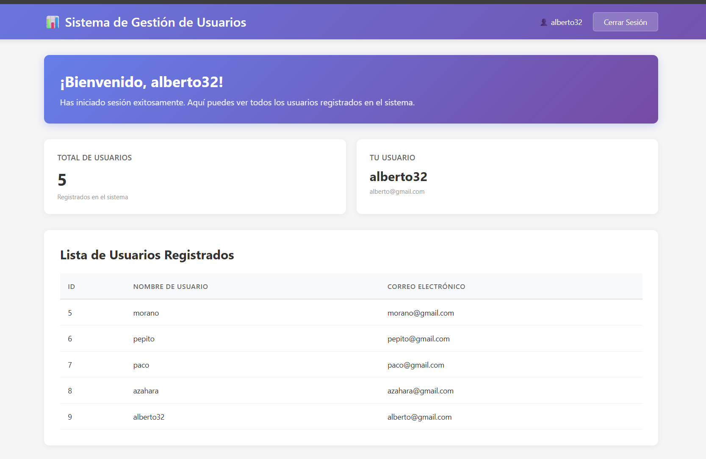

Sistema completo de autenticación con 9 capas de protección contra las vulnerabilidades más críticas: SQL Injection, XSS, CSRF, Session Fixation y más.
7
Tecnologías
8
Características
Múltiples capas de seguridad son mejores que una sola barrera.
El frontend puede ser bypaseado, el backend es la autoridad final.
Cómo funcionan y por qué los tokens son esenciales.
Por qué es unidireccional y por qué eso es bueno para la seguridad.
